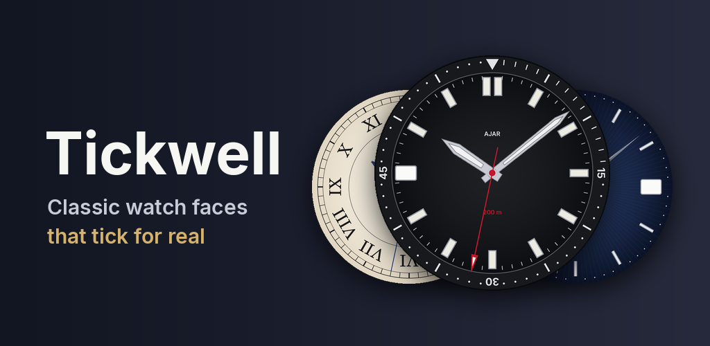

Tickwell
Nine classic analog watch faces for Wear OS, with a soft ticking sound that keeps time with the seconds hand.
Heritage, Railroad, Pilot, Dress, Quartz, Vintage, Field, Chrono and Diver, in six hand colours. Requires a watch running Wear OS 6 or newer.
No internet access, no ads, no accounts and no analytics.
Links
Made by Friendly Freelancer.